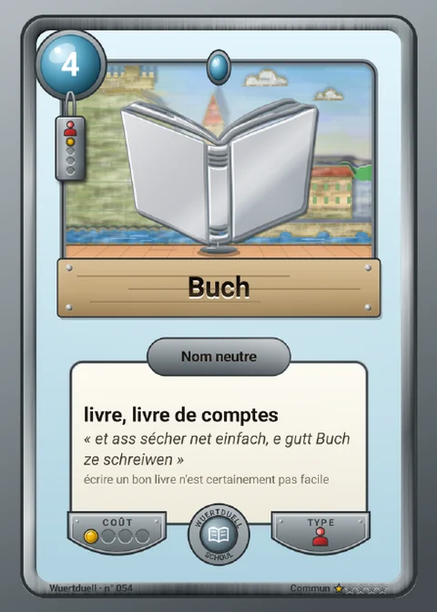
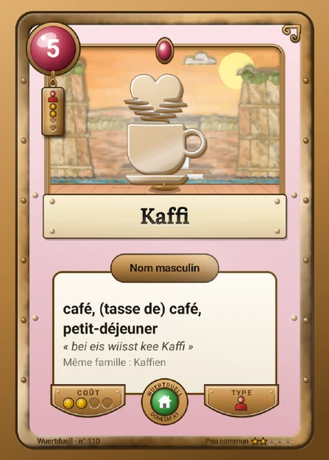
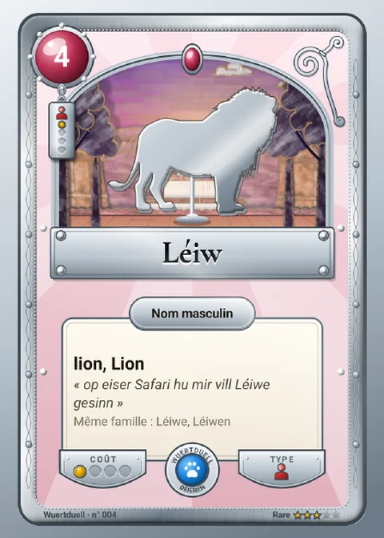
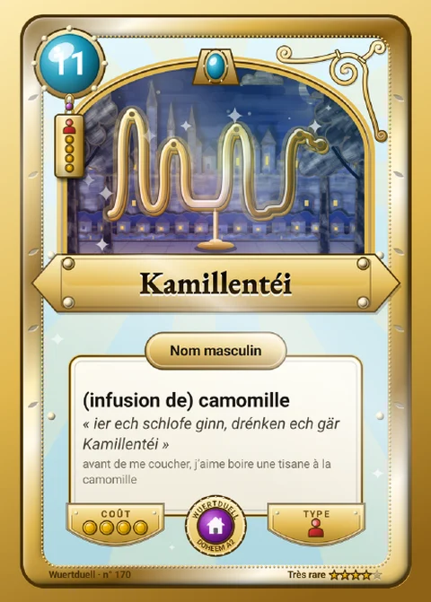

Vos cartes prennent vie, et demain sur la table ?
Ce mois-ci, les cartes de l'application ont été entièrement repeintes, les mots de tous les jours ont leur propre album, et nous avons une question pour vous : un vrai jeu de cartes en luxembourgeois, ça vous dirait ?
Des cartes peintes à la main… ou presque
Chaque carte ressemble maintenant à un petit théâtre de papier. Le ciel, les nuages, les collines, la ville au loin : tout est découpé dans du carton et peint à la gouache, avec des couleurs vives. Penchez votre téléphone, et chaque morceau du décor glisse à sa vitesse, comme si vous regardiez par une fenêtre. Les nuages traversent le ciel, les feuilles tombent en automne.

Le dessin du mot, lui, prend toute la fenêtre. Le chat, le bus, la maison se voient du premier coup d'œil, même en tout petit dans l'album. Et un nouveau lieu est à découvrir : le Breedewee, aux couleurs du Grund.
Les mots de tous les jours, page après page
Vous arrivez au Luxembourg, vous aidez vos enfants à l'école, ou vous voulez enfin oser quelques phrases ? Le carnet a maintenant une série « Niveau A1 » : les premiers mots à connaître, rangés par thème, comme la famille, la maison ou les courses.
- Une case vide montre le sens du mot à trouver : à vous de le gagner en jouant.
- Les mots essentiels du quotidien ont tous leur carte.
- Les cartes de nombre affichent leur chiffre en grand : « zweeavéierzeg », c'est 42.





Quatre maquettes, de la carte la plus courante à la plus rare. Elles existent déjà dans l'application ; on les imagine maintenant en carton.
Et si les cartes sortaient du téléphone ?
Nous imaginons un vrai jeu de cartes en luxembourgeois, le Wuertduell, à jouer à deux, en famille ou en classe, pour apprendre la langue sans s'en rendre compte. Rien n'est encore décidé : ni la date, ni le prix. Avant d'aller plus loin, nous voulons savoir si l'idée vous plaît.
Deux façons de jouer
- La Bataille des mots, dès 6 ans : chacun pose une carte, la plus forte gagne. On lit le mot à voix haute, et on l'apprend en jouant.
- Le Wuertduell, dès 8 ans : un vrai duel où l'on choisit ses cartes et sa stratégie. Lire la règle.
Des boîtes à collectionner
Chaque boîte opposerait deux familles de mots, par exemple :
Chaque boîte se jouerait seule, dès qu'on l'ouvre, ou avec les autres. Plus une carte est rare, plus son cadre est précieux. Et un code dans la boîte ajouterait ses cartes au carnet de l'application : la collection continuerait sur le téléphone.
Ce jeu vous donnerait-il envie ?
Un clic suffit. Si vous avez une minute de plus, trois petites questions suivent, dont une sur le prix qui vous semblerait juste. Aucune adresse e-mail n'est demandée.
Plus lisible pour tous
Les textes en orange ou en vert, parfois difficiles à lire, ont été corrigés. L'application se lit mieux, en plein soleil comme le soir.
Et pour les curieux…
Notre laboratoire regorge d'expériences. Ce sont des idées encore en chantier, que vous pouvez essayer avant tout le monde :
- Qui a dit quoi ? Vous déposez l'enregistrement d'une conversation en luxembourgeois. Le texte apparaît, avec le nom de chaque personne qui parle.
- Les sous-titres en direct : on parle luxembourgeois et le texte s'affiche à l'écran au fur et à mesure, avec sa traduction en français juste en dessous.
- Une appli pour vos réunions : elle écoute la réunion, sous-titre chaque phrase et vous propose ensuite un compte rendu tout prêt.
Ces expériences ne sont pas encore finies, et c'est justement pour ça qu'elles sont amusantes à essayer. Vos retours nous aident à les améliorer.
Et pour le plaisir des yeux
Une même ruelle, quatre heures de la journée. La carte la plus courante se joue au matin, la plus rare en pleine nuit, sous un dessin d'or.

Vous le parlez. Maintenant, vous l'écrivez.
Mettre à jour sur Google Play